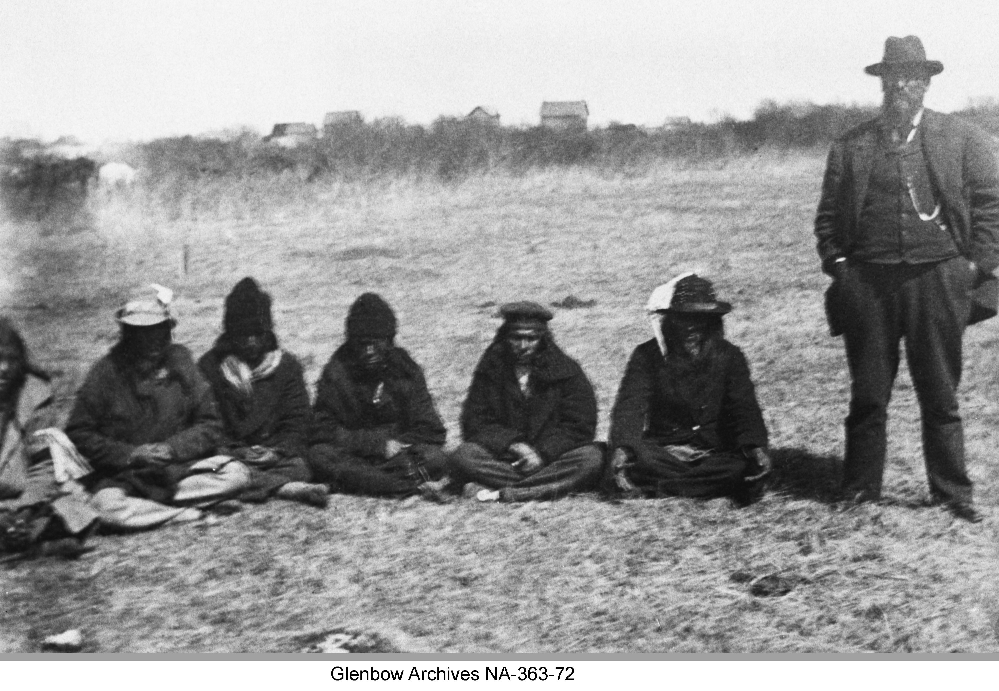
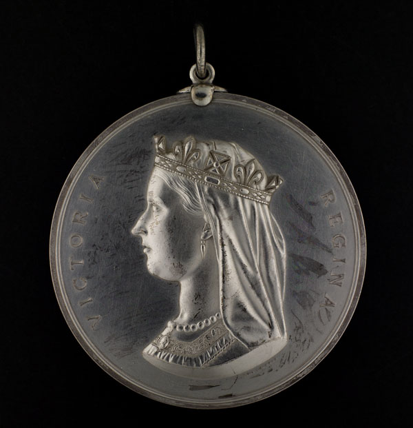

Accepting the Treaty (1876)
“Let us not think of ourselves but our children’s children, let us show our wisdom by choosing the right path while we yet have a choice”
- Ahtahkakoop
Accepting the Treaty: August 23, 1876
The last day of the Treaty negotiations at Fort Carlton took place on August 23, 1876. Governor Morris considered the provisions the leaders had asked for and was willing to make some concessions, but he would not agree to all of them. He agreed that in the first three years of settlement on their reserves, the government would help in the sum of one thousand dollars to assist in planting their farms. He also agreed to give agricultural implements. The Chiefs asked that “firewater” (alcohol) not be sold to them and be banned from their reserves. Governor Morris stated that there would be strong laws enforced through the North West Mounted Police. Included would be a medicine chest kept at the Indian Agents homes for the use of the First Nations but at the discretion of the Indian Agent. Morris reassured the terms of the treaty, “I want the Indians to understand that all that has been offered is a gift, and they still have the same mode of living as before” (Christensen 268). Erasmus and the other two translators translated to the people the terms of the treaty one more time. This took much time but the Chiefs appeared to be satisfied with what the government was offering.
Métis People
Mistawasis had one last request and wanted to know how the “Half-Breeds” would be taken care of, as some had lived amongst them. Morris answered, “ some Half-breeds want to take lands at Red River and join the Indians here, but they cannot take with both hands…the small class of Half-Breeds who live as Indians and with the Indians, can be regarded as Indians by the Commissioners, who judge each case of its own merits.” (Christensen 269) This meant that the Métis people would not be included in Treaty 6 unless they were considered to be a part of the people living on the reserve land with First Nations.
|  |
| Chief Beardy and men with interpreter |
Mistawasis and Ahtahkakoop Sign
That afternoon, Treaty Six was signed by the Treaty Commissioners, the Lieutenant Governor, followed by Chiefs Mistawasis, Ahtahkakoop, and 11 other Chiefs, and 44 Headmen. Medals, flags, and uniforms were presented as well as treaty payments. (Christensen 270)
Chief Beardy Included
Morris was determined to have Chief Beardy to sign the Treaty even though he was not present at the negotiations and sent a messenger with tobacco and provisions for Beardy to meet him after he left Fort Carlton. Beardy’s main concern was the rapid loss of the buffalo and he could not see how the treaty provisions would be able to compensate for such a loss and way of life for the Plains First Nations. He suggested to Morris that the government needed to preserve what buffalo herds were left, so that they could all share equally. Morris said little to ease the concerns of Beardy and promised that they too would receive the same as the other bands including agricultural assistance for a new way of life. Beardy was not granted his request to have the treaty payments made at the site he had envisioned, Morris did not want to accommodate Beardy and viewed his lack of participation in the negotiations as an inconvenience to the process (Stonechild and Waiser 22). In the end, Chief Beardy agreed with the terms of the Treaty and signed it.
|  |  |